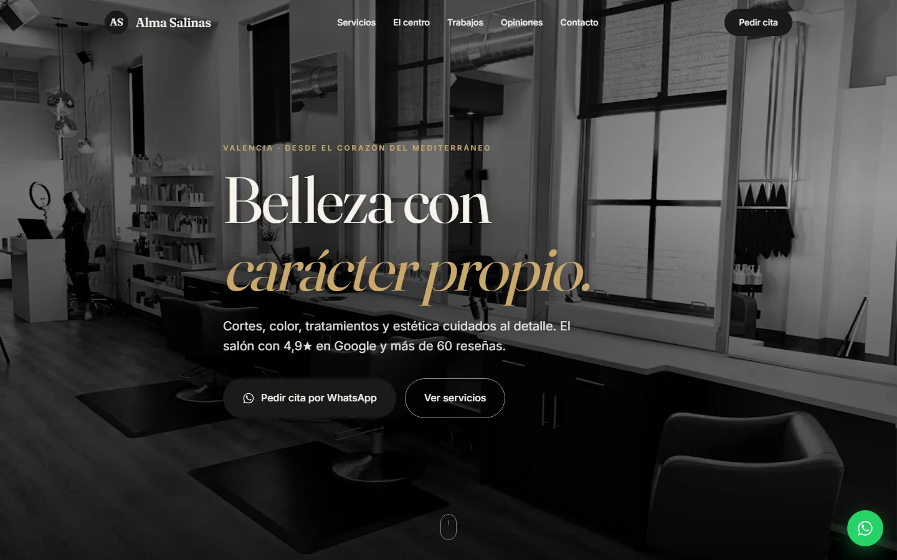
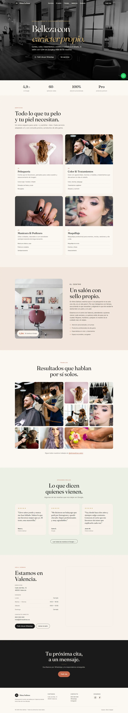
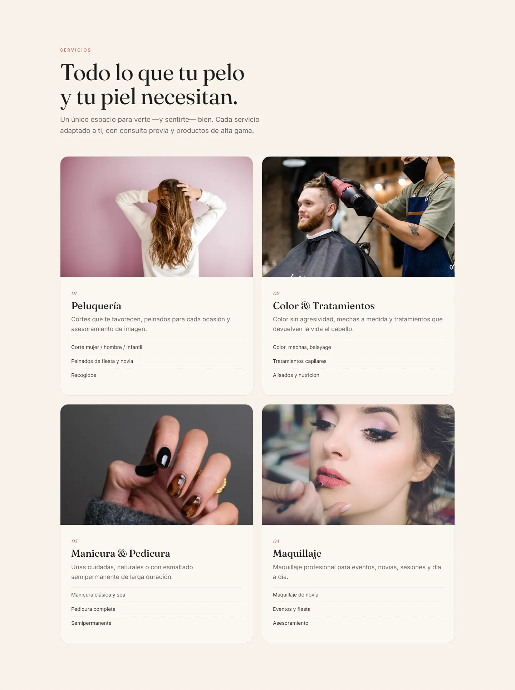
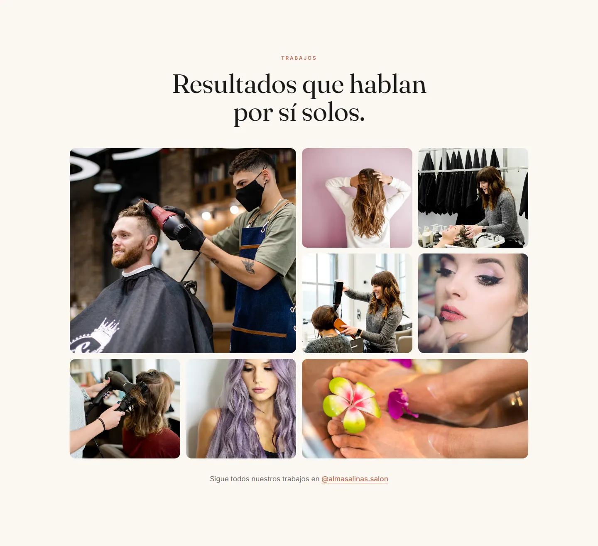
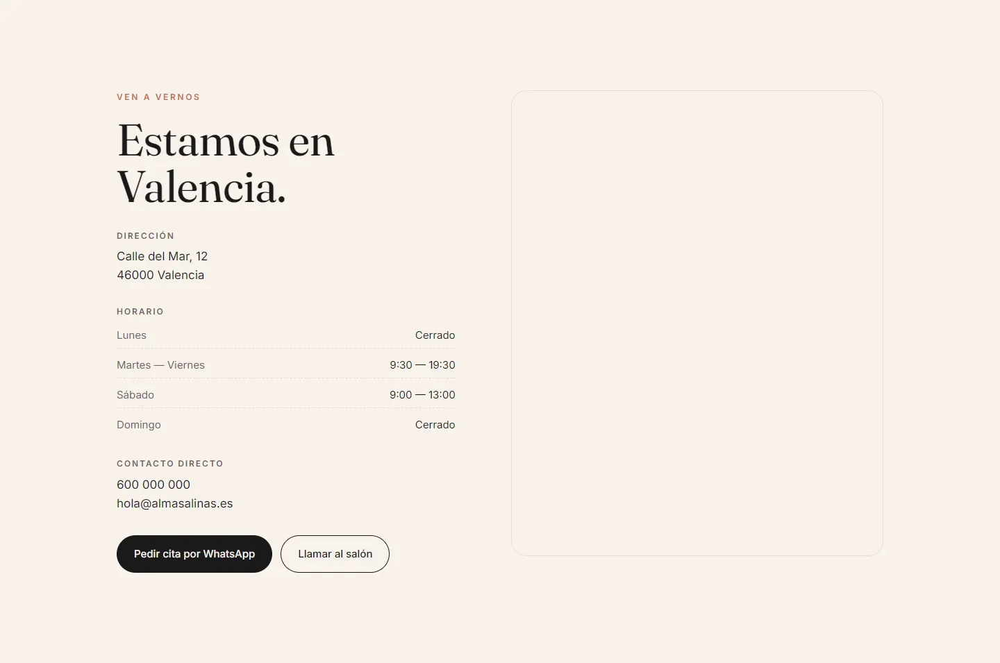
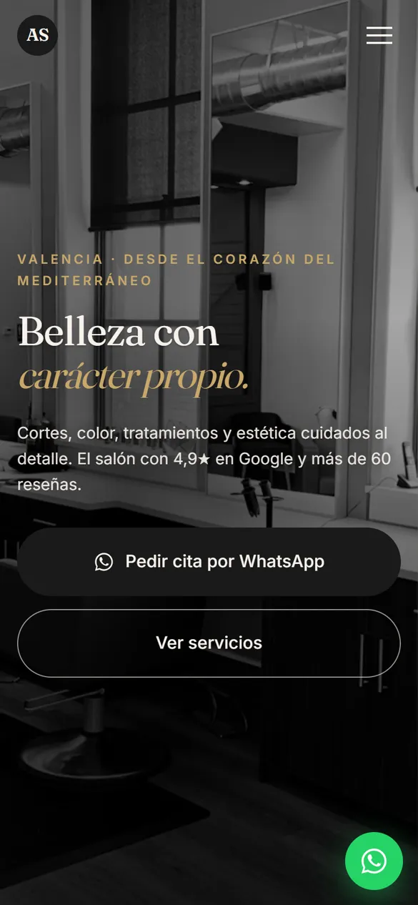
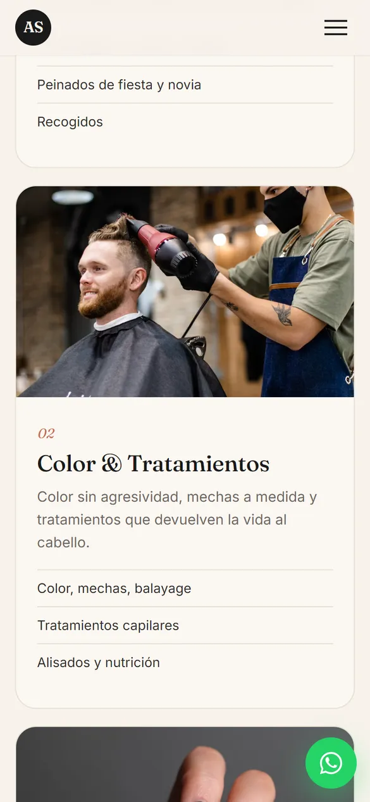
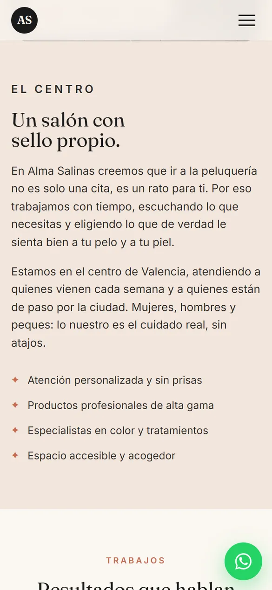
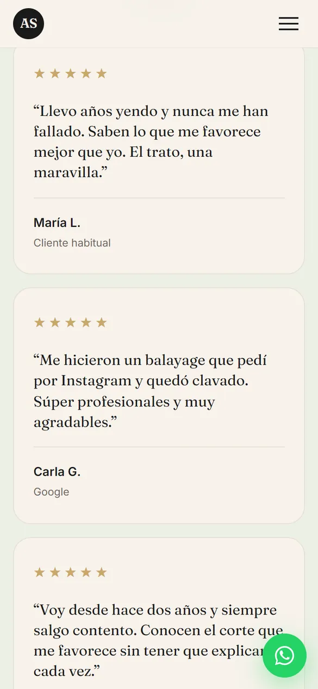

Caso 02 · Belleza
Alma Salinas
Un salón con personalidad, visible en el mundo digital. Una web demo para peluquerías y centros de belleza: cálida, editorial y pensada para que pedir cita cueste lo mismo que mandar un WhatsApp.

- 1 clicpara pedir cita por WhatsApp
- 4áreas de servicio claras de un vistazo
- 1 páginarápida y ligera, también en el móvil
01 — El reto
Del Instagram
a la agenda llena.
Muchas peluquerías tienen clientas fieles, trabajo cuidado y buenas reseñas, pero en internet se quedan en un perfil de Instagram y una ficha de Google.
Instagram enseña el trabajo, pero no convierte: no hay horario a la vista, ni lista de servicios, ni una forma rápida de pedir cita. Quien busca «peluquería cerca de mí» encuentra el salón en el mapa, pero no tiene dónde confirmar que es lo que busca. El objetivo de la demo: transmitir el cuidado del salón desde el primer segundo y convertir visitas en citas sin fricciones.
Recorrido
La web,
de arriba abajo.
- 01Belleza con carácter: la cita a un clic desde la portada.
- 02Servicios y el salón, explicados con fotos.
- 03Galería de trabajos y opiniones de clientas.
- 04Horario, mapa y cierre con la cita.

02 — La solución
Seis decisiones
que llenan la agenda.
-
01
Identidad cálida y cuidada
Crema, carbón y terracota con un toque de salvia. Calidez y sofisticación sin resultar fría ni inalcanzable.
-
02
Servicios de un vistazo
Peluquería, color, manicura y maquillaje en cuatro tarjetas con foto. La clienta sabe enseguida si el salón hace lo que busca.
-
03
Galería que enamora
Mosaico de trabajos por técnica, preparado para cargar las fotos del propio salón sin tocar código.
-
04
Cita directa por WhatsApp
Botón flotante y «Pedir cita» en cada sección. Cero fricción entre el interés y la reserva.
-
05
Lista para el SEO local
Estructura semántica y datos de peluquería con dirección, horario y valoraciones, pensada para Google Maps.
-
06
Confianza a la vista
Reseñas, horario y mapa integrados: lo que una clienta nueva busca antes de reservar, sin salir de la web.

03 — El diseño
Una web que huele bien
antes de leerla.
FrauncesTitulares: el letrero de un atelier
InterTexto: limpio y legible
- Crema
#FBF7F1 - Carbón
#1A1A1A - Terracota
#C66B4F - Salvia
#ECEFE5 - Oro
#C9A86A
La paleta es la de un salón cuidado: crema cálida como el aceite de argán, carbón para el contraste, terracota para la acción y un toque de salvia que aporta calma. Fraunces pone el carácter en los titulares y Inter, la claridad en el texto.


04 — En el móvil
Pensada para
pedir cita desde el sofá.




¿Te imaginas la tuya?
¿Tu peluquería merece una web así?
Cuéntame qué necesitas y te propongo el camino más corto para conseguirlo. Presupuesto cerrado en 24 horas.